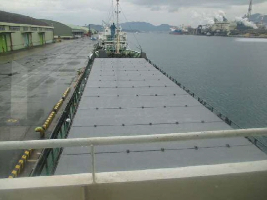

1,100 DWT 403 GRT General Cargo Blt 1992 Jp
/ informed by BNC SHIPBROKING CO., LTD.
(18-421)

- TYPE : GEARLESS GENERAL CARGO
- BUILT : JAN. 1992, JAPAN
- FLAG/CLASS : JAPAN / JG COASTER
- LOA/LBP/B/D : 65.00 / 60.00 / 10.50 / 6.00 M
- DWT/draft : 1,100 T / 3.75 M
- GRT : 403 T
- MAIN ENGINE : AKASAKA 1,000 PS X 1 SET
- SPEED : ABT 11 KNOTS
- HOLD/HATCH : 1 / 1
- CREW COMPLEMENT : 5 P
- LAST SS : DEC. 2019
- LOCATION : JAPAN
- DELIVERY : MID OCT, 2018, AT A SAFE PORT IN JAPAN
(EARLY DELIVERY IS NOT POSSIBLE)
Information History
- 180820 : She is available for sale.
- 180601 : She is available for sale.